Regularization in Linear Regression: OLS vs Ridge vs Lasso
Compare ordinary least squares, Ridge, and Lasso regression on noisy and high-dimensional data, and apply Lasso for feature selection.
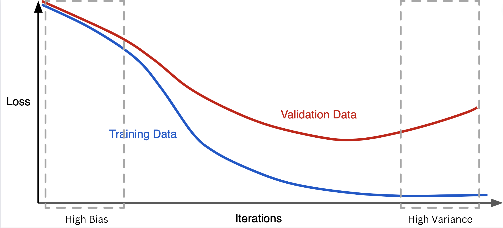
Estimated reading time: ~25 minutes
Overview
This article demonstrates how regularization improves generalization and stabilizes coefficient estimates in linear regression. We:
- Build a noisy single-feature dataset with injected outliers.
- Fit and compare OLS (ordinary least squares), Ridge, and Lasso.
- Explore a high-dimensional setting (100 features, only 10 informative).
- Use Lasso for feature selection and refit models on the reduced feature set.
- Visualize coefficient shrinkage and residual structure.
All code is provided for reference only (non-executable in this blog). Figures are pre-rendered via a headless script.
1. Imports and utility helpers
import numpy as np
import pandas as pd
import matplotlib.pyplot as plt
from sklearn.model_selection import train_test_split
from sklearn.linear_model import LinearRegression, Ridge, Lasso
from sklearn.metrics import (explained_variance_score, mean_absolute_error,
mean_squared_error, r2_score)
def regression_results(y_true, y_pred, label):
ev = explained_variance_score(y_true, y_pred)
mae = mean_absolute_error(y_true, y_pred)
mse = mean_squared_error(y_true, y_pred)
r2 = r2_score(y_true, y_pred)
print(f"{label} -> EV={ev:.4f} R2={r2:.4f} MAE={mae:.4f} MSE={mse:.4f} RMSE={mse**0.5:.4f}")2. Single-feature synthetic data with outliers
noise = 1
np.random.seed(42)
X = 2 * np.random.rand(1000, 1)
y = 4 + 3 * X + noise * np.random.randn(1000, 1)
y_ideal = 4 + 3 * X
# Inject outliers in upper range of X
from copy import deepcopy
y_outlier = deepcopy(y).ravel()
idx = np.where(X.ravel() > 1.5)[0]
sel = np.random.choice(idx, 5, replace=False)
import numpy as np
y_outlier[sel] += np.random.uniform(50, 100, len(sel))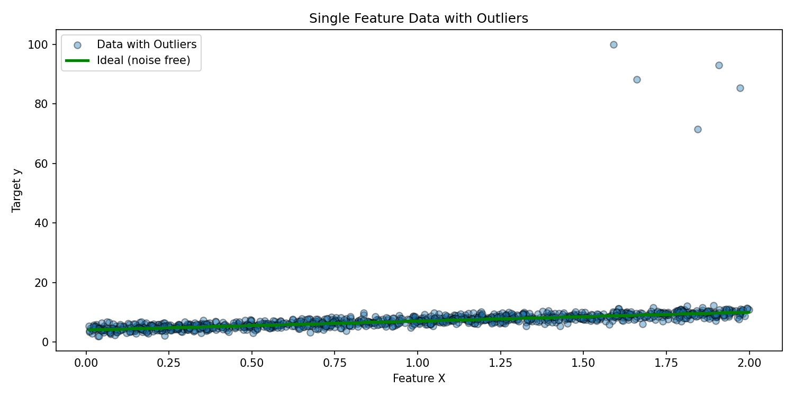
# Plot without outliers (baseline structure)
# (Same X, original y and ideal line)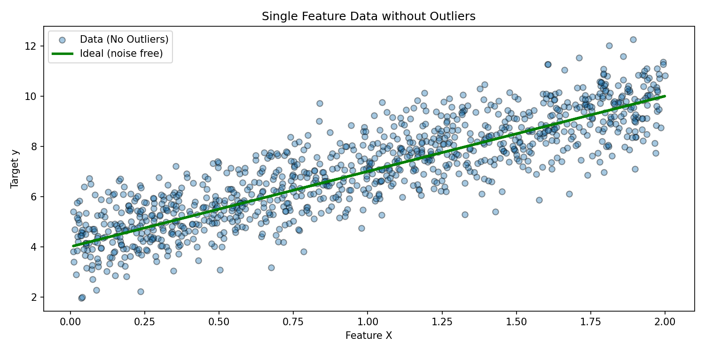
3. Fit OLS, Ridge, and Lasso (outlier scenario)
lin = LinearRegression().fit(X, y_outlier)
ridge = Ridge(alpha=1).fit(X, y_outlier)
lasso = Lasso(alpha=0.2).fit(X, y_outlier)
y_lin = lin.predict(X)
y_ridge = ridge.predict(X)
y_lasso = lasso.predict(X)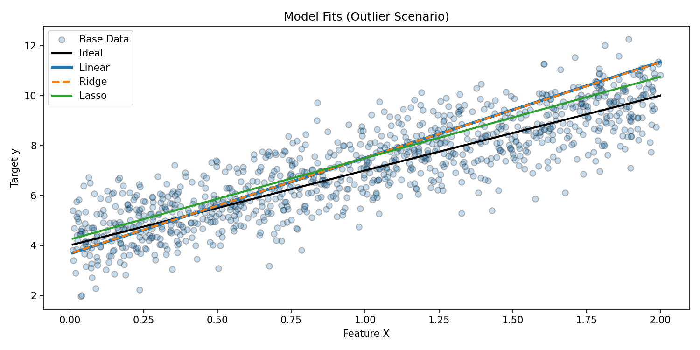
Interpretation
Outliers pull OLS and Ridge fit lines upward. Lasso, with L1 penalty, partially dampens that distortion by shrinking coefficients.
4. High-dimensional regression setup (sparse informative features)
from sklearn.datasets import make_regression
X_hd, y_hd, ideal_coef = make_regression(
n_samples=100,
n_features=100,
n_informative=10,
noise=10,
random_state=42,
coef=True
)
ideal_predictions = X_hd @ ideal_coef
X_train, X_test, y_train, y_test, ideal_train, ideal_test = train_test_split(
X_hd, y_hd, ideal_predictions, test_size=0.3, random_state=42
)lasso = Lasso(alpha=0.1)
ridge = Ridge(alpha=1.0)
linear = LinearRegression()
lasso.fit(X_train, y_train)
ridge.fit(X_train, y_train)
linear.fit(X_train, y_train)y_pred_linear = linear.predict(X_test)
y_pred_ridge = ridge.predict(X_test)
y_pred_lasso = lasso.predict(X_test)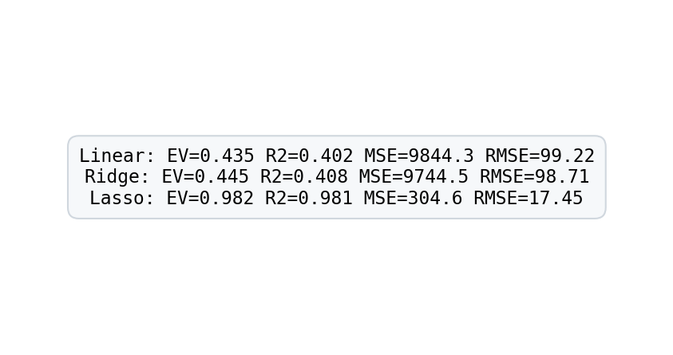
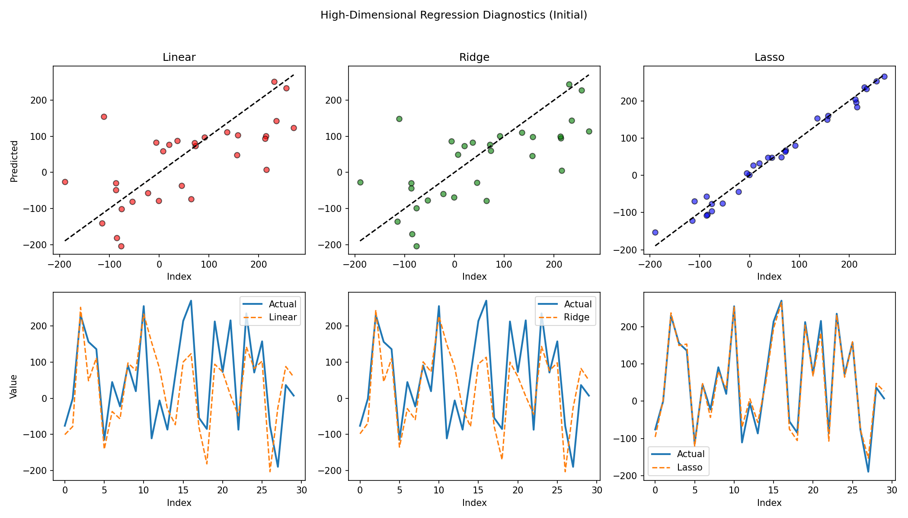
5. Coefficient comparison and residuals
linear_coef = linear.coef_
ridge_coef = ridge.coef_
lasso_coef = lasso.coef_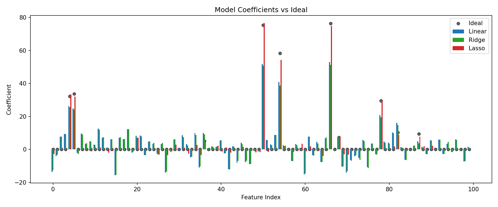
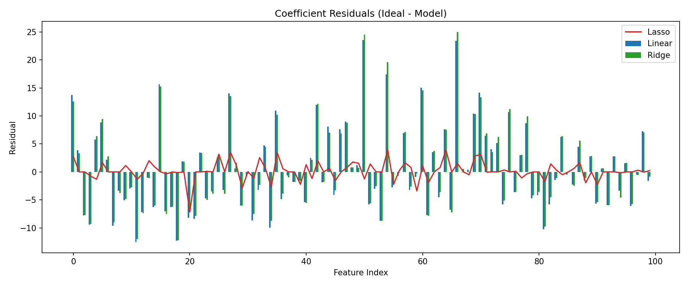
Observations
- Lasso aggressively zeroes many non-informative weights.
- Ridge shrinks coefficients but retains dense support.
- OLS overfits noisy directions, leading to wider residual spread.
6. Lasso-based feature selection
threshold = np.percentile(np.abs(lasso_coef[lasso_coef != 0]), 40) if np.any(lasso_coef!=0) else 0
important_idx = np.where(np.abs(lasso_coef) > threshold)[0]
X_filt = X_hd[:, important_idx]
X_train_f, X_test_f, y_train_f, y_test_f = train_test_split(
X_filt, y_hd, test_size=0.3, random_state=42
)
lin_f = LinearRegression().fit(X_train_f, y_train_f)
ridge_f = Ridge(alpha=1.0).fit(X_train_f, y_train_f)
lasso_f = Lasso(alpha=0.1).fit(X_train_f, y_train_f)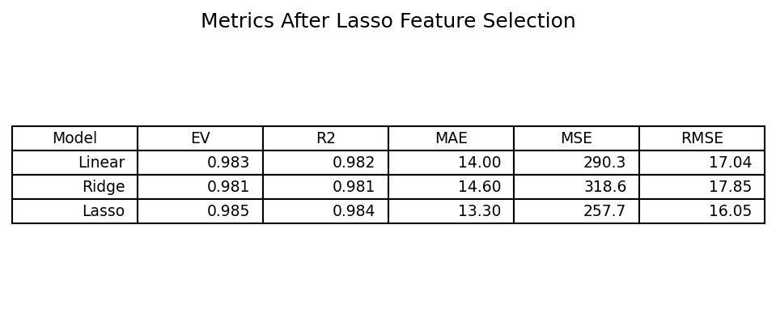
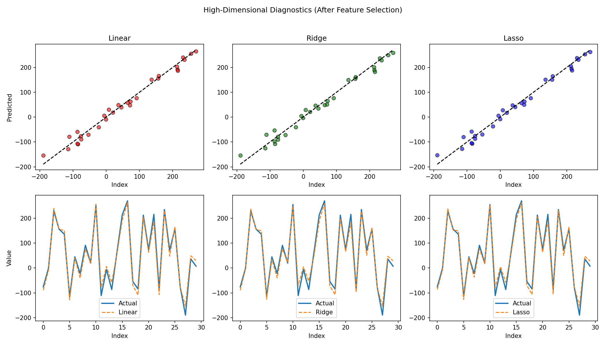
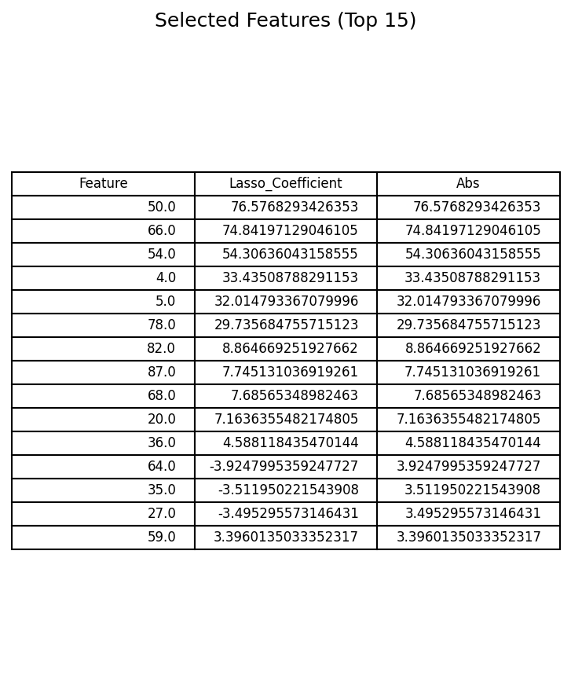
Impact
Performance for OLS and Ridge converges toward Lasso once irrelevant features are pruned. Lasso maintains strong generalization with sparse representation.
7. Key takeaways
- Regularization combats overfitting by shrinking or eliminating unstable coefficients.
- L1 (Lasso) yields sparsity, enabling feature selection and interpretability.
- L2 (Ridge) distributes penalty smoothly, stabilizing solutions without forcing zeros.
- In high-dimensional regimes, combining Lasso-based filtering with simpler models can recover strong performance.
8. Further exploration
- Elastic Net (blend L1 + L2) for correlated groups of predictors.
- Information criteria (AIC/BIC) for model selection.
- Stability selection to validate feature importance robustness.
- Cross-validation to tune alpha systematically.